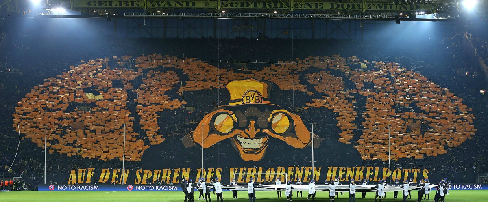
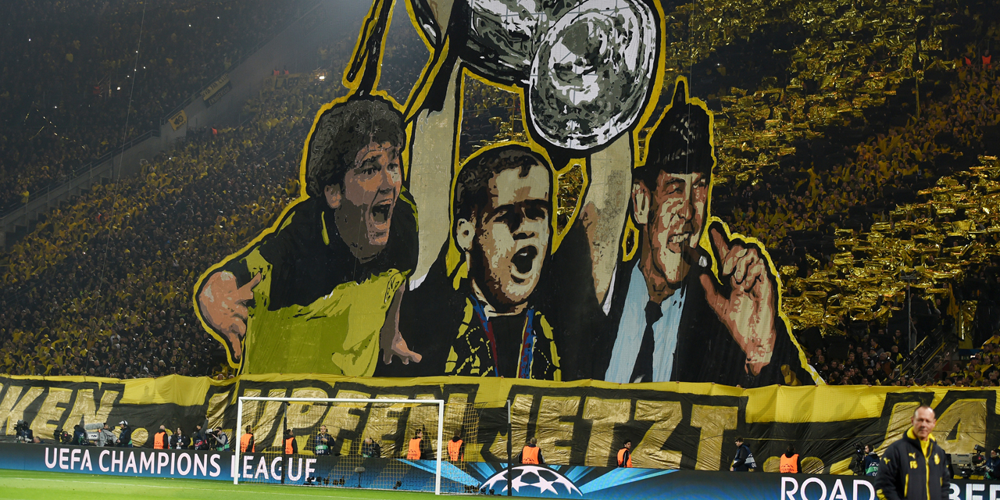
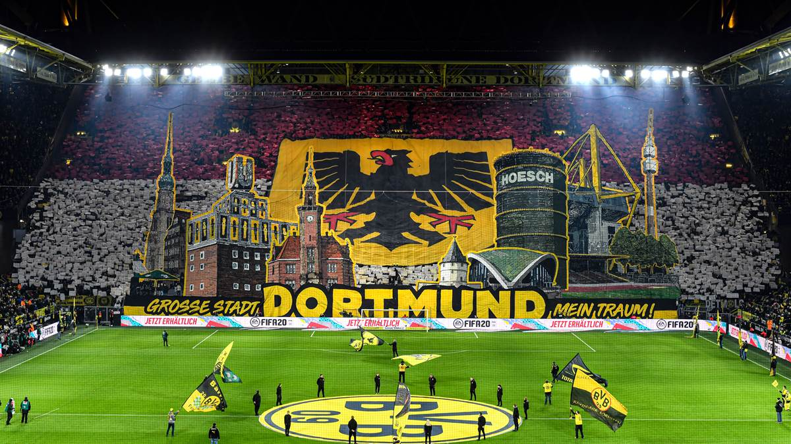
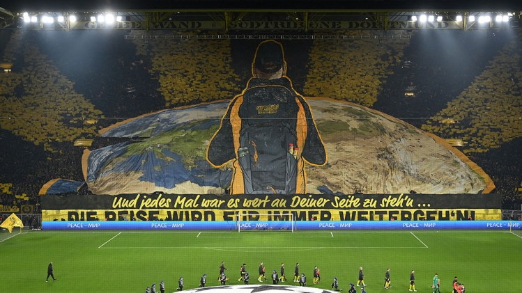
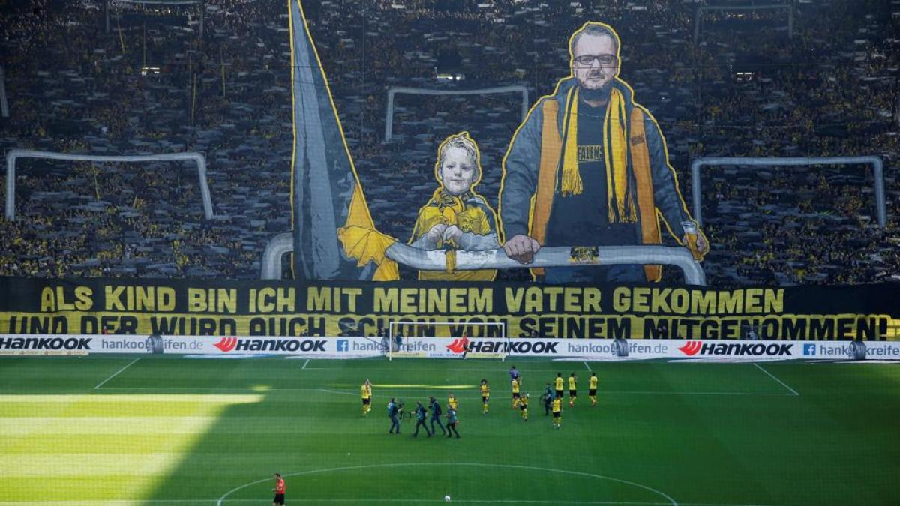
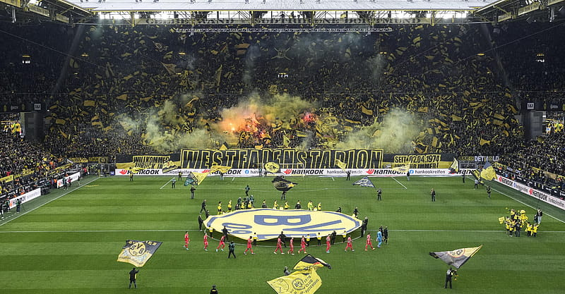
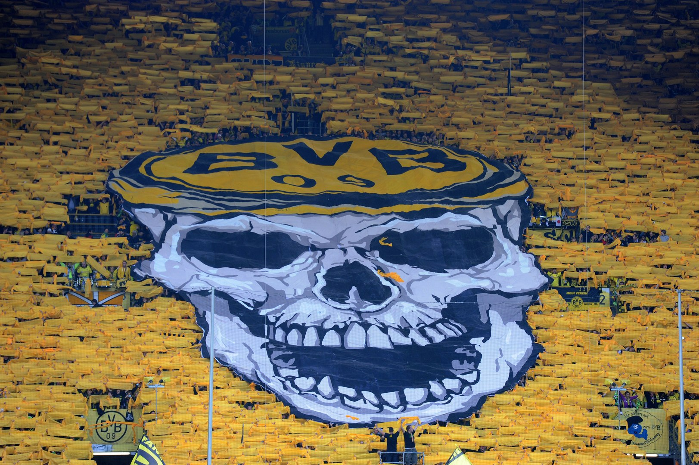
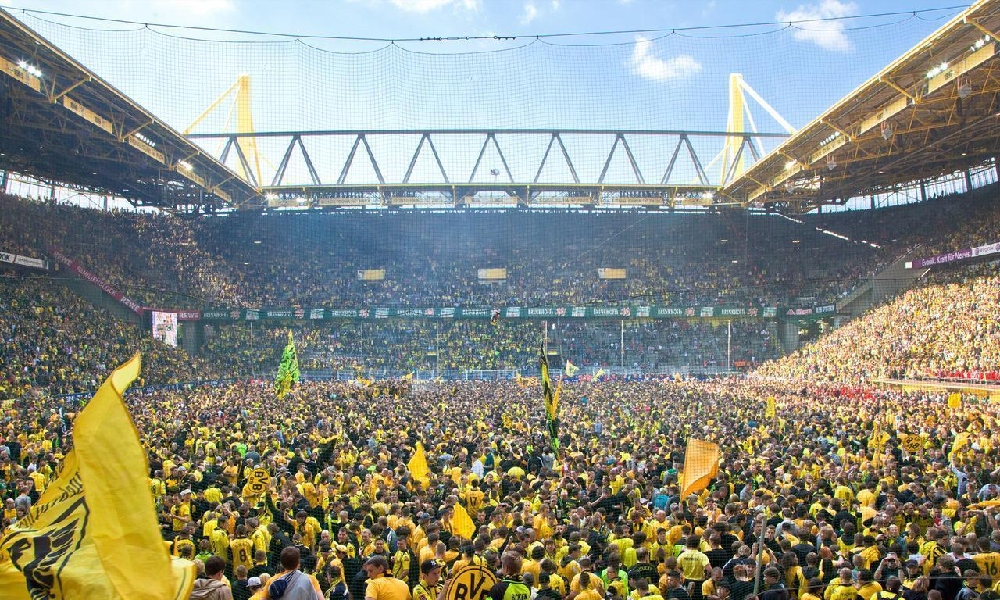

! WARNING !
cette page est réservé uniquement aux plus GRAND FAN du BV Borussia 09
N'avez vous jamais réver d'une escapade au légendaire Signal Iduna Park ? D'aclamer votre équipe préférée dans une ambiance de feu ? Ou meme d'enfiler l'équipement d'un de vos joueurs favoris ?Retrouvez ici une billeterie entre supporters , les liens vers les comptes officiels du club mais aussi vers leur boutique !







